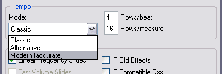
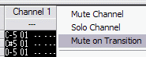
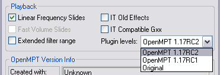
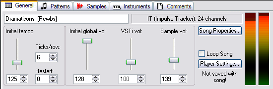
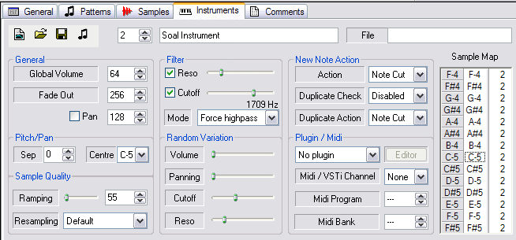
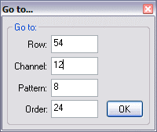
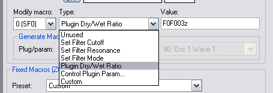
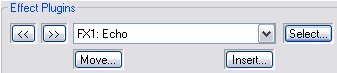
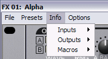

Non-exhaustive list of new items since 1.17RC1:
•
New tempo mode - more precise and easier to understand. Enable it in the song properties window:

Details:
• Txx (Fxx with xx > 20 with XM) defines the real, exact beats per minute. Always.
• The effective playback speed therefore also depends on the "rows per beat" value in the song settings.
• Axx (Fxx with xx < 21 with XM) defines the number of ticks per row as usual, but does not affect playback speed.
• Features tick-to-tick compensation for buffer size calculation rounding errors (aka high precision - BPM will nearly always be exact).
• Tempo modes (including Ericus's "alternative" mode) are saved with songs.
• Time signatures (rows per beat & rows per measure) are now saved with songs too.
•
Channel muting/unmuting on pattern transition: Toggle a channel's mute status when the next pattern starts.

Great for messing around live! Ctrl-click channel header, use the context menu or define a customisable shortcut this command.
•
Emulate Mix Bugs Has GONE!! Now select plugin mix level mode from song properties (it gets saved with the song):

There are 3 settings:
• Original (equivalent to "emulate mix bugs")
• 1.17RC1 (what it was from RC1 up until this build)
• 1.17RC2 - selected by default (what I believe to be correct: mastering plugins report the same levels as exported WAVs with this one).
If 1.17RC2 plugin mix mode is selected in the song properties, Global Volume will be applied to the final audio buffer, so will affect plugins.
•
Improvements to the volume handling in order to let the user achieve their desired balance between sample and VSTi volumes:

Sliders available for "Sample volume", "VSTi volume" and "Global volume":
• "Sample volume" is in fact the old sample pre-amp slider.
• Changing the "VSTi volume" is equivalent to changing the plugin "gain" individually for all VSTis.
• If 1.17RC2 plugin mix mode is selected in the song properties (it is by default), Global Volume will be applied to the final audio buffer, so will affect plugins. In previous versions of MPT, global volume affected only the sample volume, so the effect input signal. With the RC2 mixmode, the full output signal is affected.
• The sample and VSTi volume sliders can go up to 500, but if you're feeling insane you can type values up to 2000 in the textbox.
•
Some new instrument properties:

• Optional per-instrument resampling mode selection.
• Option to force built-in filter into highpass mode on particular instruments.
• Cutoff / resonance random variation.
•
Quick "Go to row/channel/pattern/order" dialog in pattern editor. Set up a custom key to use it the Pattern Editor/General category.

•
Added macro to control dry/wet ratio (aka volume for VSTis) from pattern. Zxx and \xx should both work.

•
More control over plugin slots: move a plugin from one slot to another; inset a new blank slot between 2 slots.

These operations will automatically update references throughout track, so the song should sound unchanged.
•
More operations/info available from plugin's GUI:

• List relevant macros, as well as input channels, instruments and plugins in the plugin info/input menu. Slot number shown in plugin window titlebar.
• Can now bypass plug from plug's window and from tree view.
• Play VSTi in plugin's window if you have set up an intrument that is assigned to that plugin. If you have multiple instruments assigned to that plugin, you can select which one is used from the info/input menu.
•
More pattern effects work on VSTis: Retrig (Qxx) now works on VSTis; portamento effects (Fxx Exx) are now sent to VSTis as Pitch Bend Midi CC variations.
•
Several new customisable key commands, e.g. navigate up/down by spacing, previous & next document, previous & next plugin preset, randomize plugin params and more...
•
IT files now save the number of channels you choose, rather than shrinking to fit & removing the last unused channels.
•
Control a VSTi's params without assigning it to a channel. If macros are used on a channel to which no plugin is assigned, but an instrument with an assigned plugin is active on that channel, the macros will be effective in the instrument's plugin. Plugs assigned to channels take priority for compatibility.
• Play notes from the sample & instrument tab without stopping the track.
• "Select plugin" dialog is now resizable. :D
• Enabled XP themes.
• Improved VST hosting stability
• Fixed additional silence that could appear at the end of rendered wavs.
• Arpeggio with XM was messed up
• Fixes to eXtension Param (#), which previously only worked on channel 1, and could not extend tempo with XMs.
• Fixed old bug that was preventing custom MIDI messages from being sent to plugs. So you can now send MIDI CC commands to your plugs! For example, to send Modwheel commands with Zxx on midi chan 0, create a custom macro with the value "B001z" (Only Zxx works for now, not \xx).
• Changing a plug param now marks song as modified.
• File marked as modified on all sample/intrument/general tab changes (some had been missed).
• Change to keyboard command handling when textboxes have focus - textboxes will work better now.
• Mousewheel should scroll pattern even if focus is in some elements above the pattern editor.
• Samplemap and instrument name should be accessible with XM files now.
• Several Autosaver fixes.
• Sample GUI was not getting updated with samples > 255
• Fixed "play row", which was only playing first tick. Should play whole row now.
• Resolution of plugin's default GUI param-slider increased from 100 to 1000.
• If a broken plugin was in the plugin list, the "Select Plugin" dialog would always select it by default
• Pattern break no longer ignored after 255 loops
• Fixed minor imprecision in \xx slide calculations.
• Changing plugin's dry/wet ratio directly from the pattern with \xx: previously could trigger an unpredictable VST parameter change - fixed
• Fixed corrupt .mod when non existent pattern is listed in sequence.
• Minor refresh fix to graphical parameter editor.
• If a sample was replaced via a drag'n'drop onto the instrument tab, the sample properties in the sample tab (e.g. loop points etc..) were not refreshed - fixed.
• Fixed random crash on XM save if an instrument had an empty sample map.
• Fixed possible truncated lines in comments.
• Changing VSTi preset from an instrument no longer forces reselection of current bank (perf improvement on some plugs)
• Fixed channel manager close bug - don't need to "open twice" anymore.
• Restored old behaviour that I had accidentally broken: ctrl-clicking a position in the order list will schedule it to play next.
• Fixed corrupt selection bug when mouse drags to the right of last channel.
• Fixed bug by which NNA'd notes originating from muted channels would still be audible.
• Fixed chunk saving for plugs with chunks less than 8 bytes (e.g. VB ffx4) - warning: might have broken loading/saving plug settings for other
• Fixed minor Channel Manager bug by which the second of two quick consecutive clicks was ignored.
• Samples attached to instruments should never be removed in cleanups with ITP.
• Fixed XM->IT conversion of Sxx over row 32.
• Paste, delete, drag should no longer work if recording is disabled.
• Many more fixes...
• Previously, in the instrument view, "Attack" represented the sample ramping where more attack meant less ramping. The property has been renamed to ramping and inverted so as to be more intuitive.
• Removed "player options" from general tab to avoid confusion as to what is saved in the file. Replaced with a button to open the Player Settings dialog.
• When exporting to MIDI, drums are mapped incorrectly.
• Previewing samples from the treeview's file browser stops the song.
• Cannot preview instruments directly from the MIDI library in the tree-view.
• Excessive performance drop when dragging over the graphical parameter editor during playback.
• With some plugins, the song file is incorrectly marked as modified on load or on playback.
• Occasional dropped notes with certain VSTis.
• Some specific note combinations result in unnexpected note-offs with some VSTis.
• The right alt (or alt-gr) key is not handled well by the keyboard configuration.
• In Windows98, the graphical parameter editor and intrument envelope editor grid display are messed up.
• Some OpenMPT keys are active even when a file dialog has focus (e.g. F2 might switch to pattern tab rather than rename a file).
• Fix known issues listed above. :)
• Distinguish MPT's modified file format from standard .it/.xm. Add option to save as standard .it/.xm.
• Remove usage of Windows registry.
• All new flexible plugin parameter control mechanism, that doesn't use macros.
• "Modular" audio & MIDI data routing from instruments, channels and plugins, and between plugins.
• Clone plugin from one slot into another.
• Improve VST compliance: add support for latency compensation, tails, delta frames, detune, VST MIDI effects, bank saving/loading...
• Better access to plugins' MidiCCs and parameters (including volume), from both pattern effects and instrument properties.
• Save plugin list in .ini as plugs are added, keep log of successfully loaded plugs on startup.
• Optionally recurse subdirectories when adding plugs (aka scan for new plugins)
• Real time parameter variation recording (from plugin GUI and from MIDI controllers)
• Add recording in sample editor.
• Save full sample paths; add "reload sample data from file" function; open sample in external editor & re-import.
• Better sample cut/paste support with other apps.
• Maybe add static VST effect support & VSTi rendering in sample editor
• Recording in sample editor
• Paste selection at cursor in sample editor
• Optionally show beginning of sample's name instead of note in pattern editor (e.g. for multi-sample drum instruments).
• Option to lock sample's frequency so its duration is always a fixed number rows (for loops).
• Optionally automatically create an associated instrument on adding a VSTi
• Tuning: add a choice of tuning modes per instrument, not just 12TET; user defined tuning modes?
• Show total channels used and total CPU Usage; CPU usage for each plugin.
• VU meters for each plugin. VU meters on pattern editor screen with clipping warning
• Pattern editor re-design with resizable/hideable channels, multiple effect columns etc..
• Generalise Effect parameter visualiser (add Note visualiser, Volume visualiser)
• Super-configurable randomizer with randomization preset loading / saving.
• Option to leave sound driver open at all times
• Automatically check online for OpenMPT updates.
• Prompt to load a backup on restart after a crash
• Warn user when they are opening an "AutoSave" file; prompt to save immediately.
• Better registry control, e.g. don't overwrite registry settings with older build, custom registry key etc..
• Optionally redirect notes played on split instrument to Split MIDI Record enabled channels, if there are any.
• Harden custom keys subcontext/supercontext implementation, it's currently a bit of a mess.
• Make GUI more customisable, particularly what sits above the pattern editor.
• Smarter MIDI-in (make use of more types of MIDI messages)
• MIDI-out (including CCs)
• Menu enhancements: make more instrument/sample/pattern editor commands available from main menu bar; make context menus customisable.
...and much more... :)
Helpful bug reports, new ideas and brave volunteers to test early development builds or contribute to the code are more than welcome!
But please check out the
known issues and the
to do list before dropping us a bug report / feature request.
Try the Modplug.com forums first: http://www.modplug.com/forum
Failing that, email rewbs: robin@soal.org
Modplug Tracker and its source code are Copyright © 2004-2005 GPL and Copyright © 1997-2003 Olivier Lapicque
Thursday August 11, 2005 10:09:58 AM